한 줄 칩 (추천)
[Z]
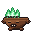
화로마=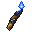
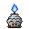
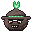
가마솥물=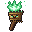
횃불마=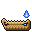
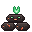
숯마=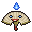
지금과 같은 줄 수(4줄)가 보입니다. 재료 이름은 칩에 마우스를 올리거나 상세(Tab)에서 봅니다. 말줄임이 없어집니다.
게임 화면을 2배로 그렸습니다. 그림은 게임에 있는 실제 스프라이트입니다. 새로 생김 바뀜 그대로
| 6 | 1 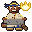 귀교 목수 광역 · 오라 |
2 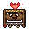 톱+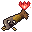 끌+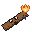 자 + 메밀묵 1 · 엽전 60냥3마딜 · 사거리 3칸 · 광역 공격 … 더보기 ▾ |
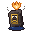
먹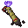
붓 ▸ 하위 5개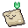
한지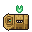
멍석물=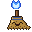
온라인 하단 카드(높이 44px)는 칩 줄 1~2개만 들어가서 이번에는 칩만 넣고, 레이아웃 정리는 나중에 Codex 개편(솔로·온라인 통일)에서 다룹니다.